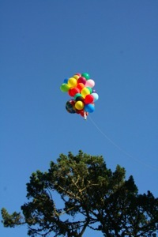
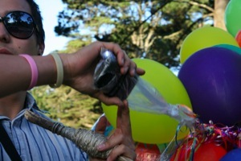
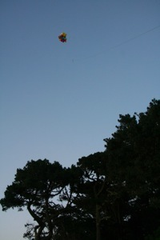
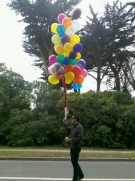
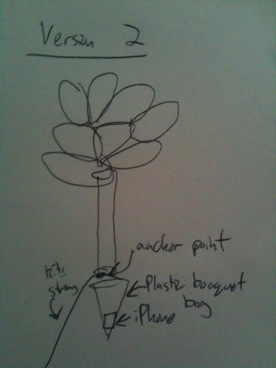
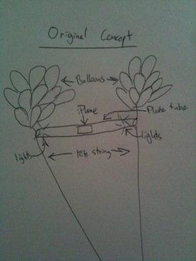

a tribute to Steve: iCloud alpha & exiting The Reality Distortion Field


![Steve Jobs was a man I always admired. Sure, countless others did, and maybe I was no different. I, like many others, have been a fan of Apple products for quite some time. But what really sets Steve apart, I think, is the amount of care and thought he put into everything he did. With his zen philosophy, he had a way to present things in their simplest light in a way that was refreshing and beautiful, and all his products ‘just worked’. I have spent countless hours in my life with my Apple products, and they have been my portal to creativity, knowledge, a better understanding of the world, and above all, the ability to simply accomplish what I set out to do. I have saved hundreds of hours using products that Steve was instrumental in creating, so I just wanted to give something back. I created this little sub-reddit as a home for pieces of Steve’s words or thoughts on Steve to be compiled and function as a online memorial:
http://reddit.com/r/SteveJobsRIP
Also, I wrote this piece, called: “Exiting The Reality Distortion Field”:
October 6th, 2011
I awake to the sound of mariachis, wondering what the hell is making this racket. I search all around the room to locate the noise, and finally, under a pile of my clothes, I find it.
It is a simple black box with just a single button.
It appears to be dripping with water but the device is still functioning. Pushing the square button doesn't seem to silence the noise, or change anything about the device. I push it several times, and a recognizable symbol appears. It is the classic play button triangle on an old VCR. However, it is part of the screen and there is no button to select it. I turn it over to see if I can remove the batteries, but they seem to be glued in permanently incased in a plastic shell. Is this some sort of noise prank device? Did my friends pull one over on me?
Finally, after pushing all the buttons, I find a button labeled negative that seems to make it quieter. I push it until the device is silent.
I lie back down in bed and try to fall back asleep... but my mind is still racing with thoughts of the mysterious black box. What was it? What is its purpose? Who is its maker? As I'm thinking about all of this I wonder if I should get up, and I glance over to see what time it is...
But alas! My beautiful alarm clock with it's large familiar black snooze button that was a staple of my daily life and beautiful glowing red digital display is gone!
Who stole my alarm clock and who planted this cryptic black device in my bedroom?
After lying in bed crowded by these questions, I figure I will get up and read the morning paper to clear my head of it all. So I stagger over to my kitchen table where my paper normally lies. Not only is my paper not there but there lies is a larger version device that resembles the first prank device! Being someone to always enjoy the effort that someone else puts into a prank, I figure I might as well play it out and enjoy the ride… I wonder if they have me on hidden camera. I push the buttons on the device and manage to make the thing light up, but unfortunately because of the glare through the window I can't make out what it says.
I walk over to another room with the device and read the words "Slide to unlock." Ok, it's some sort of puzzle. Unlock what? Slide what? Since I'm at the mercy of whoever did this to me I figure I might as well play it out. This sort of reminds me of some sci-fi books I used to read and I pretend for a moment that I'm the protagonist. I figure unlock is the goal, as it will probably lead me to my next puzzle. Hmmm… Slide… I think of slip and slides and the time that I almost kissed Mary at the waterpark in 4th grade. Should I slide the entire device across the floor? I see an arrow encased in a rounded rectangle that points to the right. It looks like I somehow need to move that arrow to the right. Rotating the device doesn't seem to make it fall, shaking it doesn't move it. In an act of frustration I furiously claw at the device… and ah ha! I inadvertently solve the puzzle!
Suddenly I get bombarded with a series of rings, chimes, jingles, and electronic riffs and a flood of messages from my friends, asking what I'm up to, if I heard the news, and if so, how I'm taking it, angry messages form ex girlfriends, and pictures of people's pets...
This is all too much.
I set down the thing, and go for a walk outside.
Finally, I made this piece while Steve was alive, but about a month before his death. I jokingly titled it iCloud Alpha, as iCloud was yet to be released. It turned out to be more relevant than ever, and decided to tribute it to Steve. I originally had the idea for doing something with aerial photography when walking through a mall and finding a stand that sold helicopters. I asked them what their largest helicopter was, and if he thought it might be able to support an iPhone strapped to the bottom of it. Here is a video of my initial test:
Not quite enough torque. I went back, bought the stronger helicopter, but the large model proved unreliable, shifty quickly with winds, and I couldn’t really control it. Going back to the drawing board, I rethought what exactly it was I trying to do. I didn’t need a helicopter, I just needed some form of lift. So I went down to the grocery store to see if it would be reasonable to lift an iPhone with some balloons. I used a clear triangular flower bouquet bag, and cut a hole in the bottom of it so the iPhone camera could stick out, then I put the phone in upside down, and secured it with some hair bungee ties. This was then attached to a red plastic tube which I originally I wanted to add some small lights too, but it ended up being too heavy. The original concept was to have the tube joining 2 sets of balloons with the iPhone in the center, and each side of the tube would be attached to a kite string so that you could control the camera direction left and right. This required more balloons for the lift to work and I was already spending about $30-$50 in balloons which were only good for a couple hours. I decided to keep it simple for the time being.
Here are some pictures:
It was the Outside Lands Festival at Golden Gate Park in San Francisco, so I figured it was the ideal time to get some good shots. Steve grew up in San Francisco and has carried much of the culture from the 60s haight-asbury times with him his whole life. I took 3 hours and footage and edited it down to 3 mins with iMovie. I used the music from the Steve’s Pixar created movie UP, which seemed to be especially relevant. I typed this all out on a Mac, and published it with iWeb, and of course, shot it with an iPhone.
Thank you Steve for letting us all achieve our dreams.](For_Steve_files/shapeimage_1.png)





